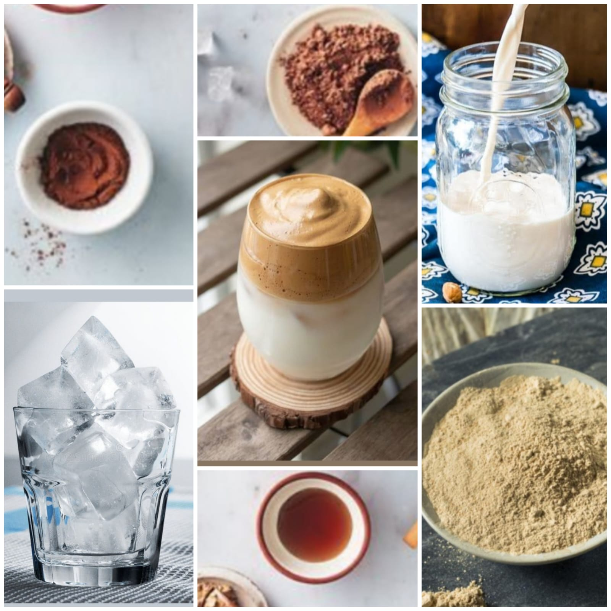

Dalgona Coffee
Home
Dalgona coffee is a beverage made by whipping equal parts instant coffee powder, sugar, and hot water until it becomes creamy and then adding it to cold or hot milk. Occasionally, it is topped with coffee powder, cocoa, crumbled biscuits, or honey. It was popularized on social media during the COVID-19 pandemic, when people refraining from going out started making videos of whipping the coffee at home, by hand without using electrical mixers. The name is derived from dalgona, a Korean sugar candy, due to the resemblance in taste and appearance, though most dalgona coffee doesn't actually contain dalgona.
Ingredients
2 tablespoons boiling water
2 tablespoons instant coffee
2 tablespoons white sugar
1 cup whole milk

Nutrition Facts
Calories 101
Total Fat 2.0g
Cholesterol 294mg
Sodium 2271mg
Total Carbohydrate 19g
Iron 0.1%
Calcium 0.76%
Procedure
Take a mixing bowl and add 2 tablespoons of instant coffeemix, 2 tablespoons of sugar, 2 tablespoons of hot water.
Whisk these well until you get a creamy consistency.
Take cup and add 3 ice cubes to it then pour milk and add the cream at the top.
mix it well and enjoy the tasty Dalgona Coffee...!
Expert Guide
Back ←
Scroll to Top ↑